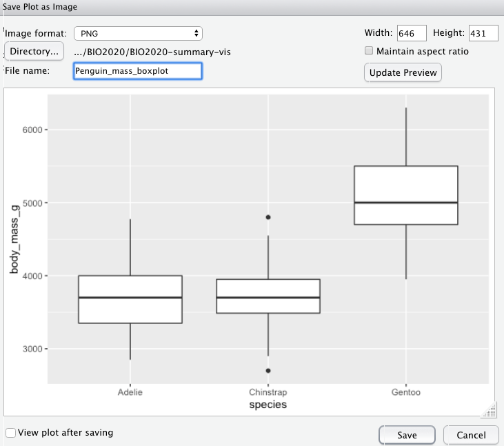

R and Rstudio installation
This module is an introduction to using the R software through the Rstudio interface. R is both a computer software and a programming language that can be used for powerful data analysis and will be used across several of the taught modules that you will undertake.
Campus computers have the software installed and when working from home/off campus you can access it through the windows virtual desktop WVD Client. R and Rstudio are free software that you can download and run on your computer (it is compatible with Windows, Mac and Linux). To get set up with the software on your machine follow these steps
- You can download the R software by selecting your operating system and downloading the latest release.

- Download the Rstudio desktop software Choosing the free open source edition.
Once both R and Rstudio have been downloaded and installed on your machine you can get to work
Navigating Rstudio
On opening Rstudio you should see something like this
In the top left click file > new file > R script and now you should have four windows that look something like this:

You should now have Four panes in your Rstudio window, you might notice that some of them have multiple tabs as well. Let’s run through the meaning of each of the panes, and the tabs that we are going to be using:
Scripts
The pane in the top left contains your scripts, scripts are files that contain code, most often you will be working with files that have the .R extension, these are files that your comuter recognises as containing R code. One of the key reasons that R is so popular is because it allows us to make our work reproducible. By writing down each bit of our analysis and saving it in a script we can reproduce our work with ease. Future you will be thank past you for saving your code in scripts when you are making last minute edits to your dissertation and you need to remember exactly what the analysis methods you used were.
Environment
The pane in the top right has a couple of tabs but the one that we need to know about is the Environment tab. The Environment pane tells us what objects R has loaded in to its memory, these might be data files that we have imported or the results of some analyses. This pane shows us the objects that R has available for doing useful stuff.
Console
The pane in the bottom left also has several tabs and the one that we use is called the console. This pane is the ‘doing pane’ when we want to run bits f code that we have saved in our script we send them to the console to be executed - which means R does what our code tells it to do. You might see people typing code directly in to the console and while this is possible it is not advisable.
Files/Plots/Packages
Bottom right pane has several tabs that give the pane different functions that can be of use.
The Files tab can be used a bit like windows explorer/finder to navigate through the files on your computer.Here the files tab shows us that within the folder that we are working in there are several different files associated with the module handbook as well as a folder of images
The Plots tab is where the plots that you create using the code written in your script will appear. It has an export button that you can use to save your plots or to copy them to your clipborad so that you can then insert them into documents or presentations.
The Packages tab shows you the packages that are installed on your computer, the ones with ticks in the boxes are ones that are loaded and ready for you to use. Packages are collections of code that other people have written that we can use.
You can see here that there are several packages that are installed with the R software and some pacages like the base package are already loaded and ready to use
A note on packages üì¶ |
When working through tutorials you might find examples of functions being noted to belong to a package. eg. we're going to use the `read_csv` function ( üì¶ readr). The package is noted for reference, a common error that we see is R |
Students often ask “how do you remember which functions to use” and “which functions are in each package” the answer is that it is experience, the more you come to use R the more of the code you remember. The good news is that you don’t necessarily need to memorise which package a particular function belongs to but knowing can help with troubleshooting issues, the most common being that R doesn’t recognise a function when the package that function belongs to hasn’t been loaded.
The Help tab offers you an interactive window through which you can use the help files for R functions. You can use the search bar at the top of the pane to search for the help files associated with a given package or function.

- a note about using the help files, their structure , what they show
The Viewer tab can be used to look at interactive files such as animated plots or the tutorials that we are working through…if tutorials are being hosted in the package???
Think of R as your Kitchen
Using R can be thought of similar to using a kitchen to cook.

There are loads of really great chefs (coders) in the world who have already figured out a lot of techniques and gadgets that can be used to make some great food.
You don’t always have to cook everything from scratch - you can use the information and tools that other people have provided to make your cooking experience easier and more enjoyable
FYI: you can change the default location of the panes, among many other things: Customizing RStudio
Projects üóÑ
To load information from files in to R we need to tell R exactly where on our computer that file is. The file path is the information that denotes where on your computer a file is stored. Often file paths are specific to your computer or to your username and might look something like this:
"C:/Users/Myusername/Documents/Uniwork/mydataforbio2020.xlsx"This tells us that ‚Äúmydata.xlsx‚Äù is in the üìÅUniwork, which is in the üìÅ Documents on my computer.
The file path for a specific file will almost always be different on different peoples computers (depending on which folder you saved a file in for example) and this can cause confusion when we are trying to run our code or asking a friend to check our code.
We can minimise the issues with this by using the Projects option that is built in to RStudio. When we create a Project RStudio will create a file with the extension .Proj which basically tells R to start looking for files from the folder that we are in.
It is good practice to have a seperate RStudio project for each project that you are working on so it would be a good idea to have a seperate Project for each of the modules that you use R for and a project for your dissertation work.
Setting up a Project
To create a new project go to the projects menu, either by clicking the dropdown in the top right hand side of your window (next to where it says Project: (None)) or by clicking File > New Project
You should now see this popup window:

Select New directory then New Project
Give your project a name (eg. the name of the module) and select where on your computer you want that to live. Click Create project and you should now see the name of your project displayed in the top right hand side of your RStudio window.
NB If you are an organised person and you had already created a folder for all of the work associated with a given module you can select Existing Directory navigate to your already existing folder and then select create project and the .RProj file will live in that folder alongside all your other files
When you work in a Project R knows to look within that project folder for any files that you want to access. Now that you are working in a project the Files tab (bottom right window) will default to displaying the files that are in your project folder.
üóÑ How you organise your files within the project folder is up to you, there are some good tips in this guide produced by the British Ecological Society
We suggest that you have a couple of subfolders to keep you organised
- üìÅ Data, where all of your data files live
- üìÅAnalysis, where you can store all of your scripts
When working in a project you can access your data files using a shorter file path
"Data/mydataforbio2020.xlsx"rather than
"C:/Users/Myusername/Documents/Uniwork/BIO2020/Data/mydataforbio2020.xlsx"
Working with data
When we come to start working in R there is some terminology that it is useful to run through
Creating Objects
You can get R to return a value by giving it some simple maths
6*7## [1] 42But to do useful and interesting things with that value we need to assign it to an object. To do this we first need to come up with a name for our object, then we use the assignment operator which looks like this <- to give our value to the object:
my_height <- 175<- is used to assign the value 175 to the object my_height
In RStudio, typing Alt + - (push Alt at the same time as the - key) will write <- in a single keystroke in a PC, while typing cmd + - (push cmd at the same time as the - key) does the same in a Mac.
Object names
Objects can be given any name, good object names are explicit (in providing some information about the object) and are not too long.
There are some names that cannot be used because they are the names of fundamental functions in R (e.g.,if, else, for, see here for a complete list). In general, even if it’s allowed, it’s best to not use other function names (e.g., c, T, mean, data, df, weights). If in doubt, check the help to see if the name is already in use. It’s also best to avoid dots (.) within namesso use an underscore (_) if you need.
Objects vs. variables What are known as objects in R are known as variables in many other programming languages. However, in this lesson, the two words are used synonymously. For more information see: https://cran.r-project.org/doc/manuals/r-release/R-lang.html#Objects
The objects that we create are stored in the Environment (remember that top right pane) To see what has been assigned to an object you can send the name of the object to the console.
my_height## [1] 175We can update the value that is assigned to the object my_height by overwriting the current value. Update the value of my_height so that it has the value of Your height in cm
Now that you have stored your height in the my_height object we can do some arithmatic with it. Run the below code to convert your height from cm to inches
## [1] 68.89764What do you think is the current value of my_height? Check below
Hint Remember that to get R to display the value of an object you need to give it the object name (my_height)
You will notice that the value of my_height is still in cm, why? Because we didn’t store your height in inches as an object, let’s do that now
## [1] 68.89764Comments
The comment character in R is
#, anything to the right of a#in a script will be ignored by R. It is very useful to leave notes and explanations in your scripts, we highly reccommend that you get into the habit of commenting your code as it will help you to remember what you have done AND it will help us to help you if you encounter problems. RStudio makes it easy to comment or uncomment a paragraph: after selecting the lines you want to comment, press at the same time on your keyboard Ctrl + Shift + C. If you only want to comment out one line, you can put the cursor at any location of that line (i.e. no need to select the whole line), then press Ctrl + Shift + C.
Functions
Data types
character, numeric, factor(?)
Data structures
vector ,matrix, data frame/tibble
Importing and exporting data
To be able to analyse our data in R we first have to import/read it in to R so that it is available to us in our environment (Taking it out of the cupboard and placing it on the counter). How we go about this varies slightly depending on the file that we are going to be using. In all cases we need to assign the information in the file to an object so our code will start with the name of the object we are creating and the <- symbol
üìÅCSV
Often data are stored in a .csv file a specific file type that is commonly used, these files look just like excel files (you can open them up and look at them in excel) they are just read differently by the computer. You will likely see two different ways of reading these files in to R using either the read.csv() function or the read_csv() function (üì¶ readr). These functions essentially do the same thing (get your data in to R) but with some slight differences that we will address later on.
my_data_object <- read.csv(path = "Path_to_the_file.csv")
my_data_object <- read_csv(path = "Path_to_the_file.csv")üìÅ Excel
Using the read_excel() function (üì¶ reaxl) you can import information from excel files (.xlsx and .xls) containing multiple sheets. By default the function will read the information from the first sheet unless you specify the name of the sheet that you want.
my_data_object <- read_excel(path = "Path to the file.xlsx", sheet = "name of sheet")Saving outputs
Saving data objects üî¢
Once we have manipulated our data we may want to save it as a file that we can then share with others. Data can be saved to .csv files using either the write.csv function or the write_csv function (üì¶ readr).
The code is similar to that used to read data in, it requires the filepath specifying where you want to save the file which includes the name that you want to give to the file, and it requires the name of the object that is being written (saved).
# writing my_data_object to a file called my_output_data
write.csv(my_data_object, path = "Data/my_output_data.csv")
write_csv(my_data_object, path = "Data/my_output_data.csv")Saving plots üñº
Once you have created your beautiful plots that support your analysis you will want to be able to copy them into your reports. The easiest way to do this is to use the dropdown Export menu in the plots pane.
You can copy plots to the clipboard or save them as a file (specifying the file type, .png/.jpg/.tiff etc.)
The popup preivew that appears when you choose to copy a plot to the clipboard or to save it as an image allows you to specify the size that you want the image to be. Altering the size of your plot here will give you a much clearer plot than if you resize a copied or saved plot after adding it to your destination document.

You can specify the image size using the numbers or you can grab the plot by the triangle in the bottom right corner of the preivew pane and drag the plot to the desired size.
Basic manipulations
- selecting
- filtering
More on data manipulation ## Plotting
More on data visualisation ## Getting help
- using the help function
- googleing your error message top tips
- Ask your classmates they might have solved a similar issue (will they have teams space?)
Further resources
Want to keep learning
{kind=link}
There are A LOT of excellent resources out there for learning R, some of those that we reccomend are listed here and should be enough to keep you going
learnR4free Data science box Data carpentry